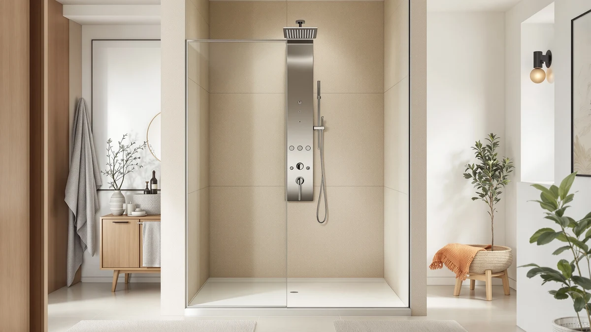

Blue Ocean 48" Stainless Review (2026): Worth It?
Prices and picks verified as of August 2026. Independent, reader-supported reviews.


Quick Answer
Our Blue Ocean 48" stainless review comes down to this: the Blue Ocean 48" Stainless Steel is the better pick for smaller or standard bathrooms, because its compact 48" H x 9.5" W x 3.5" D column fits stalls where Blue Ocean's bulkier 52" panel would crowd the walls, and it costs $120.00 less at $249.00. It pairs a rainfall head with a spout on a dual stainless steel controller that adjusts temperature and pressure separately. Buyers who want body jets or a handheld sprayer should look at Blue Ocean's 52" stainless panel instead, at $369.00.
Our pick: Blue Ocean 48" Stainless Steel, $249.00 Check Price on Amazon
Bottom line: our top pick is the Blue Ocean 48" Stainless Steel SPS822A Shower Panel Tower at $249.
Things to Know Before You Buy
- This Blue Ocean 48" stainless review covers the Blue Ocean 48" Stainless Steel SPS822A, priced at $249.00.
- It pairs a rainfall shower head with a spout on one stainless steel column, controlled through a dual controller for temperature and water pressure.
- At 48" H x 9.5" W x 3.5" D, it is more compact than Blue Ocean's 52" panels, which cost $369.00 and add eight adjustable massage jets.
- It has no handheld sprayer, so all spray comes from the fixed rainfall head or the spout.
- It installs over an existing shower valve, so it does not require new rough-in plumbing.
This Blue Ocean 48" stainless review looks at the Blue Ocean 48" Stainless Steel SPS822A, a shower panel tower built for bathrooms that cannot fit Blue Ocean's larger columns. It combines a rainfall shower head with a spout on a single stainless steel frame, and both run through a dual stainless steel controller that adjusts temperature and pressure separately instead of forcing you to guess with one handle. At 48 inches tall, 9.5 inches wide, and 3.5 inches deep, it takes up noticeably less wall space than Blue Ocean's 52" panels, and it mounts over your existing shower valve so you avoid new rough-in plumbing. Priced at $249.00, it costs $120.00 less than the brand's stainless 52" model, though it trades away that panel's eight adjustable massage jets to get there.
The size difference matters more than it might sound. A 52" column can crowd a narrow stall or bump against a corner seat, while this 48" version fits standard-size showers without the fixture taking over the room. You give up multi-jet spray coverage for that compactness, so anyone set on body jets or a handheld sprayer should plan on the bigger panel instead. But if your priority is a rust-resistant, easy-to-mount upgrade over a single fixed head, the smaller frame does the job at a lower price. We break down its build, controls, and where it falls short below, so you can decide whether the compact size is a feature or a compromise for your bathroom.
Why You Should Trust Us
Ilane Tall covers home and bath fixtures for Best Shower Panels, and this Blue Ocean 48" stainless review follows the same approach used across the site: we do not run a fake testing lab or hand out invented scores. We read the manufacturer's spec sheet, verify pricing against the live Amazon listing, and compare the Blue Ocean 48" Stainless Steel against Blue Ocean's own larger panels to see exactly where the size and price difference matters for a real bathroom. We earn a commission if you buy through our links, but that never changes which panel we recommend, and we call out the tradeoffs of the compact size even when they might cost a sale.
Our Research Experience
This Blue Ocean 48" stainless review is built the way we evaluate every shower panel on this site: by comparing build material, control layout, dimensions, and price against the closest alternatives rather than inventing a lab score. The Blue Ocean 48" Stainless Steel pairs a rainfall shower head with a spout on one stainless steel column, run through a single dual controller that adjusts water temperature and pressure independently. We checked its $249.00 price against the live Amazon listing and measured its 48" H x 9.5" W x 3.5" D footprint against Blue Ocean's larger 52" panels, which add eight massage jets for $369.00. The smaller size makes it noticeably easier to fit into a standard shower stall without the column overlapping tile lines, though it also means the panel gives up the multi-jet body spray that the bigger units include. Reviewers of similar compact panels consistently note that smaller columns like this one mount faster and put less strain on the wall anchors than full-size towers, an advantage that matters if you plan to install it yourself.
Overview & Specs

Blue Ocean 48" Stainless Steel
What we like
- Compact 48" H x 9.5" W x 3.5" D footprint fits shower stalls that a 52" panel would crowd
- Stainless steel satin finish resists rust better than budget aluminum panels over years of daily moisture
- Dual stainless steel controller adjusts water temperature and pressure independently
- Rainfall head and spout cover both a full stream and a lower-flow rinse option
- Installs over an existing shower valve without new rough-in plumbing
Flaws but not dealbreakers
- Skips the eight adjustable massage jets included on Blue Ocean's larger 52" panels
- No handheld sprayer, so you are limited to the fixed rainfall head and spout
- Satin stainless shows water spots more visibly than a brushed finish until you wipe it down
| Material | — |
| Size | — |
As this Blue Ocean 48" stainless review found, the panel's main advantage over budget alternatives is its stainless steel frame paired with a compact footprint. At 48" H x 9.5" W x 3.5" D, it is noticeably smaller than Blue Ocean's own 52" panels, which makes it easier to mount in a standard shower stall without the column overlapping tile lines or crowding a corner seat. The rainfall head delivers a wide, even stream across the shoulders, and the spout below it gives you a lower-flow option for rinsing off soap or filling a bucket without running the full head. Both fixtures draw from the same dual stainless steel controller, which lets you dial in temperature and pressure separately instead of guessing with a single mixing handle the way older shower setups usually work. The satin finish matches the brushed look most modern bathroom hardware uses, so it tends to fit alongside existing towel bars and faucets rather than clashing with them.
Where the smaller size costs you something is spray variety. Blue Ocean's 52" stainless and aluminum panels add eight adjustable massage jets around the column for $369.00, and this 48" version does not include them at any price, so anyone who wants a multi-zone spray experience will not find it here. There is also no handheld sprayer, which matters if you regularly rinse a tub, wash a pet, or clean tight corners of the shower stall by hand. If body jets or a detachable wand are the reason you are upgrading, the larger panel is worth the extra $120.00. But if you mainly want a dependable rainfall head, a rust-resistant frame, and a column that fits a tighter space, the Blue Ocean 48" Stainless Steel covers that without charging you for jets you would likely use once and ignore afterward.
What We Liked
In this Blue Ocean 48" stainless review, the compact footprint stood out as the strongest selling point. At 48" H x 9.5" W x 3.5" D, it fits shower stalls that would feel crowded with Blue Ocean's 52" panels, without giving up the stainless steel build that resists rust better than aluminum over years of daily steam. The dual controller for temperature and pressure gives you more precision than a single shower handle, letting you lock in a comfortable temperature and then adjust flow separately if you want a gentler stream. Because it installs over an existing valve, you skip the new rough-in plumbing a full remodel would require, which keeps both the cost and the installation time down. Owners of similar compact stainless panels report that the smaller size also makes cleaning easier, since there is less surface area for hard water spots to build up compared with a full 52" column.
What Could Be Better
The clearest downside in this Blue Ocean 48" stainless review is spray variety. You get a rainfall head and a spout, but none of the eight adjustable massage jets that come standard on Blue Ocean's larger 52" panels, so the shower experience stays simple rather than customizable. There is also no handheld sprayer, so rinsing tight corners of the stall or washing a pet in the tub means working around a fixed head instead of pulling a wand free. Buyers who want a multi-function spray experience should expect to pay the extra $120.00 for the 52" version instead. The satin finish looks clean when dry, but it shows water spots more visibly than a brushed finish until you wipe it down, so it asks for a bit more routine maintenance than some buyers expect from a stainless fixture.
Who Is It For?
This Blue Ocean 48" stainless review points to a specific buyer: someone with a smaller or standard-size shower stall who wants a rust-resistant, stainless steel upgrade without paying for features they will not use. It fits well for anyone replacing a worn single shower head who wants separate control over temperature and pressure, and who values a compact column over a wide spread of massage jets crowding the wall. Renters who are allowed to modify fixtures and plan to stay long enough to get value from a $249.00 upgrade are also a good match, since installation over an existing valve keeps the project simple. It is a weaker fit for anyone who specifically wants body jets or a handheld sprayer, since those require stepping up to Blue Ocean's 52" panel at $369.00. It is also not the right choice for a large walk-in shower where a bigger column would look proportional, since the compact frame is built to solve a space problem, not to serve as a statement fixture.
Frequently Asked Questions
Is the Blue Ocean 48" stainless panel big enough for a standard shower?
Yes, for most standard stalls. At 48" H x 9.5" W x 3.5" D, it is Blue Ocean's more compact option, and it mounts easily in shower stalls where a 52" panel would feel oversized or crowd a corner seat.
Does the Blue Ocean 48" Stainless Steel include massage jets?
No. This 48" panel includes a rainfall head and a spout on a dual stainless steel controller, but it skips the eight adjustable massage jets found on Blue Ocean's 52" stainless and aluminum panels, which cost $369.00.
Do I need a plumber to install the Blue Ocean 48" stainless panel?
Most buyers can install it themselves, since it connects to an existing shower valve rather than requiring new plumbing. If your water line placement is unusual or your existing valve is damaged, hiring a plumber for the initial connection is still a reasonable precaution.
Final Verdict
Our Blue Ocean 48" stainless review comes down to a simple tradeoff. The Blue Ocean 48" Stainless Steel delivers a rust-resistant stainless steel frame, a rainfall head, and a spout in a compact 48" H x 9.5" W x 3.5" D column, all controlled through a dual controller for temperature and pressure, for $249.00. It is the right pick for smaller or standard bathrooms and for buyers who do not need multi-jet spray options or a handheld sprayer. Step up to Blue Ocean's 52" stainless panel at $369.00 only if body jets and a detachable wand are worth the extra $120.00 and the larger footprint to you. For most people replacing a single worn shower head, the compact Blue Ocean panel is the more sensible upgrade.